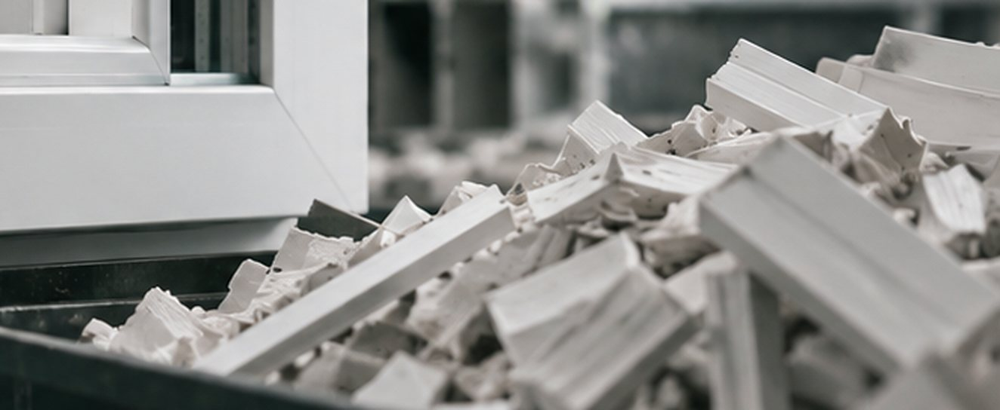
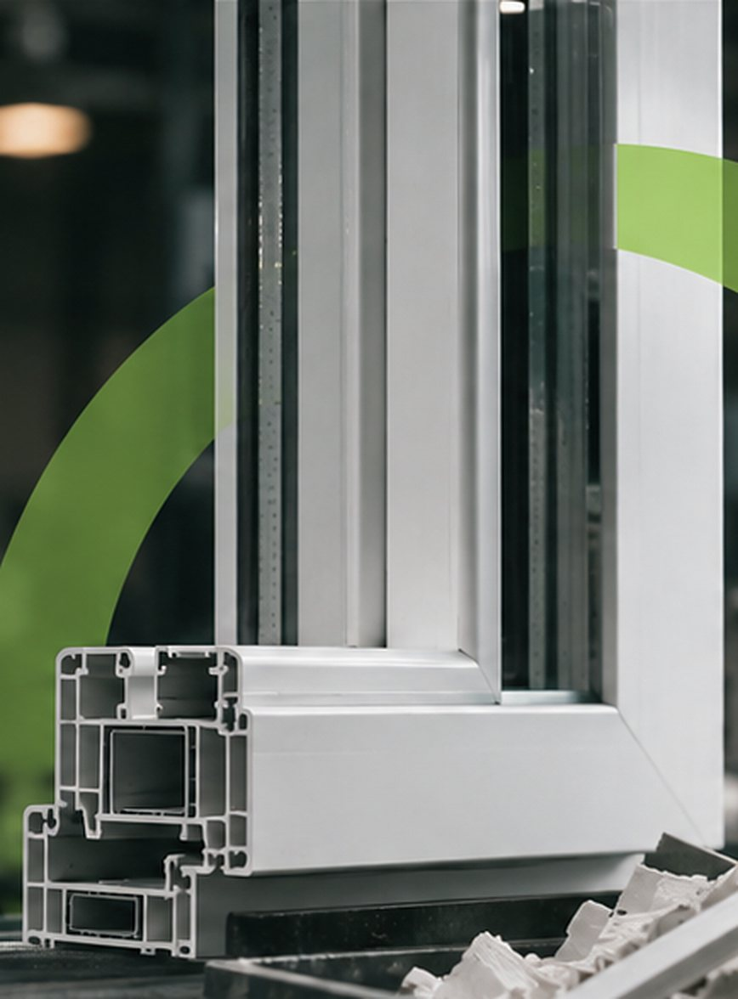

01
Espacio recuperado
Menos despuntes acumulados significa más área libre para producir, circular y almacenar lo que sí se usa.
- Orden en el área de corte
- Menos material estorbando
- Taller más seguro
Iniciativa de economía circular
Región de O'Higgins
Exploramos una forma más simple de gestionar y potencialmente valorizar los despuntes de PVC de fabricantes de ventanas de la Región de O'Higgins.
Solicitar evaluación de retiroProyecto en etapa de validación. Enviar la solicitud no garantiza un retiro.
01 El problema
Fabricar una ventana de PVC implica cortar perfiles a medida. Los trozos sobrantes, los despuntes, se acumulan en el taller y ocupan espacio útil.
Hoy muchas veces se tratan como un residuo más, aunque siguen siendo PVC. RE-FRAME busca ofrecer una forma más simple de gestionarlos.


02 Nuestra propuesta
Queremos evaluar, junto a fabricantes de la Región de O'Higgins, si es posible retirar sus despuntes de forma simple y darles una segunda vida.
RE-FRAME está en etapa de validación: aún no es un servicio operativo.
03 Beneficios
Tres beneficios que queremos comprobar junto a los fabricantes.
Menos despuntes acumulados significa más área libre para producir, circular y almacenar lo que sí se usa.
Un único punto de contacto para evaluar si un retiro tiene sentido, sin trámites ni gestiones que le quiten tiempo al taller.
Evaluamos si el PVC separado y limpio puede tener un segundo uso en lugar de terminar como residuo.
04 Cómo podría funcionar RE-FRAME
Así imaginamos el proceso. Es una propuesta en validación: hoy el primer paso es solicitar una evaluación.
Completas un formulario breve con tu taller, comuna y un rango aproximado de despuntes.
El equipo revisa tu solicitud y analiza si un retiro es posible en tu comuna y volumen.
Si corresponde, te contactamos para explorar opciones. Esto no garantiza un retiro.
05 Solicitud de evaluación
Completa el formulario y evaluaremos si un retiro es posible para tu taller.
RE-FRAME está en etapa de validación. Enviar esta solicitud no garantiza un servicio de retiro.